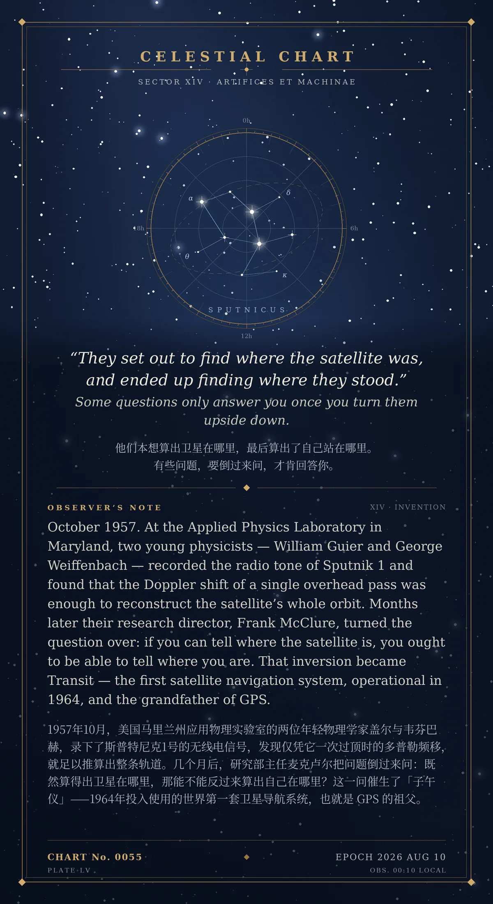

“They set out to find where the satellite was, and ended up finding where they stood.” Some questions only answer you once you turn them upside down.（他们本想算出卫星在哪里，最后算出了自己站在哪里。有些问题，要倒过来问，才肯回答你。）
1957年10月，美国马里兰州约翰斯·霍普金斯大学应用物理实验室的两位年轻物理学家 William Guier 与 George Weiffenbach，录下了斯普特尼克1号的无线电信号，发现仅凭它一次过顶时的多普勒频移，就足以推算出整条轨道。几个月后，研究部主任 Frank McClure 把问题倒过来问：既然算得出卫星在哪里，那能不能反过来算出自己在哪里？这一问催生了「子午仪」（Transit）——1964年投入使用的世界第一套卫星导航系统，也就是 GPS 的祖父。
冷知识由执笔的模型自行查证。逐条断言、来源与所引原句存档在纯文字副本里，未经程序逐字校验，留作事后核实。